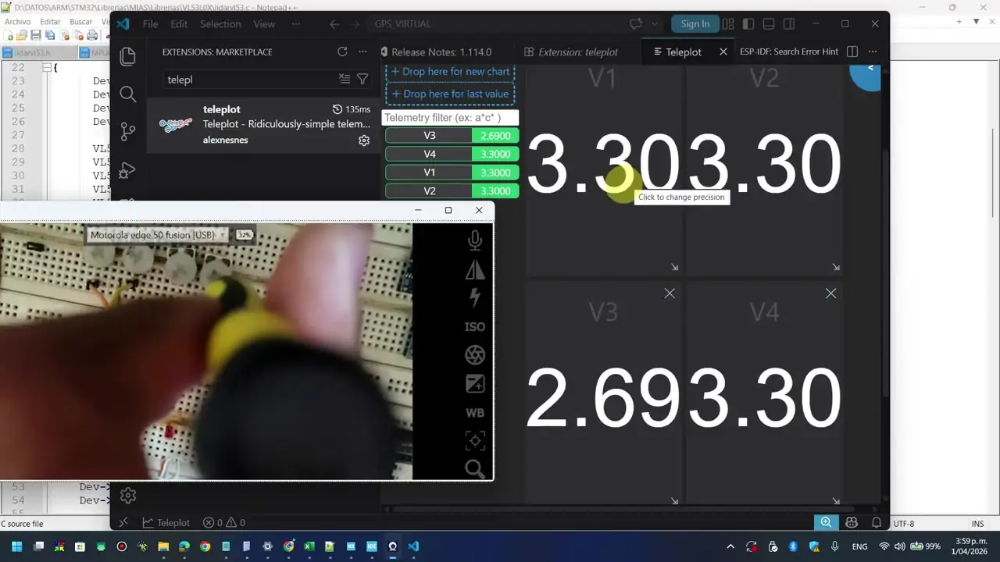

El ADC es de 12 bits: el código máximo es 212 − 1 = 4095.
La resolución es Vref / 4095 = 3.3 / 4095 ≈ 0.805 mV por código. El ADC no lee voltaje sino código; para pasarlo a voltios se hace una regla de tres.
voltaje = codigo * 3.3 / 4095.0;Actualizamos la librería del ADC (adc_x) para que sirva tanto con un canal en modo normal como con varios canales por DMA, y ahora en modo circular, que es más estable porque el DMA rellena el buffer solo. Primero repasamos la resolución del ADC de 12 bits (3.3 V / 4095 ≈ 0.805 mV), leemos un canal y lo pasamos a voltaje. Luego configuramos 4 canales (IN0, IN1, IN3, IN5) con escaneo continuo y DMA circular, arrancamos la conversión una sola vez y en el while solo leemos el arreglo adc1_codigo[]. Al final graficamos los cuatro voltajes en Teleplot.

El ADC es de 12 bits: el código máximo es 212 − 1 = 4095.
La resolución es Vref / 4095 = 3.3 / 4095 ≈ 0.805 mV por código. El ADC no lee voltaje sino código; para pasarlo a voltios se hace una regla de tres.
voltaje = codigo * 3.3 / 4095.0;Proyecto con el STM32F411CEU, cristal externo y PLL a 100 MHz (84 MHz en un F401).
Activamos USART1 asíncrono a 115200 y en Analog el ADC1 con un canal (IN0). Para un solo canal no hay que configurar nada más.
El F411 tiene un solo conversor (ADC1) con varios canales; otros micros tienen varios conversores y la librería sirve para todos.
Lo llamamos ADC_DMA_AUTO_2026, toolchain STM32CubeIDE, y generamos código.
Creamos la carpeta LIBRERIAS en Core, la agregamos al path y copiamos adc_x.c/.h (la X es porque sirve sola o con DMA) y uart.c/.h.
Incluimos todo en main.c y declaramos las variables. Activamos también printf con float en las opciones del proyecto.
/* USER CODE BEGIN Includes */
#include "adc_x.h"
#include "uart.h"
#include "stdio.h"
#include "string.h"
/* USER CODE BEGIN PV */
uint16_t codigo;
float voltaje;
char texto[50];Enviamos "INICIANDO" al arrancar y en el while leemos el código con ADC_Read, calculamos el voltaje y lo enviamos cada 500 ms.
/* USER CODE BEGIN 2 */
uartx_write_text(&huart1, "INICIANDO\r\n");
while (1)
{
codigo = ADC_Read(&hadc1);
voltaje = codigo*3.3/4095.0;
sprintf(texto, "COD=%u\r\n", codigo);
uartx_write_text(&huart1, texto);
sprintf(texto, "VOLTAJE=%.2f\r\n\r\n", voltaje);
uartx_write_text(&huart1, texto);
HAL_Delay(500);
}En el video el primer intento no mostraba el voltaje porque faltaba el %.2f.
En Hercules vemos el código y el voltaje: de 0 a 4095 y de 0 a 3.3 V al girar el potenciómetro.
Activamos IN0, IN1, IN3 e IN5.
En DMA Settings agregamos el DMA del ADC1 y lo ponemos en Circular: así el DMA vuelve a llenar el buffer solo cada vez que termina, sin que tengamos que pedirlo.
Antes la librería usaba modo Normal; el circular es más estable y preciso.
En Parameter Settings: Scan Conversion Mode Enabled, Continuous Conversion Mode Enabled, DMA Continuous Requests Enabled y fin de conversión al terminar todas las conversiones.
Number of Conversion = 4. Rank 1 canal 0, Rank 2 canal 1, Rank 3 canal 3 y Rank 4 canal 5. El orden de los ranks es el orden en que se llena el buffer.
El Sampling Time se puede subir si hay ruido (en el video, 84 ciclos para el primer canal). Generamos código.
Si conectas potenciómetros o sensores de baja impedancia (menos de 10 k), deja un Sampling Time alto en cada rank.
Comentamos ADC_Read y antes del while llamamos ADC_Read_DMA una sola vez: desde ahí se llena solo el arreglo adc1_codigo[].
En adc_x.h solo hay que poner el número de canales.
// adc_x.h
extern ADC_HandleTypeDef hadc1;
#define adc1_canales 4 // coloque numero de canales del ADC
extern uint16_t adc1_codigo[];
// main.c, USER CODE BEGIN 2
ADC_Read_DMA(&hadc1, adc1_canales, adc1_codigo);adc1_codigo[0] es el rank 1 (IN0), adc1_codigo[1] el rank 2 (IN1), y así. Reutilizamos la variable voltaje para cada canal.
while (1)
{
voltaje = adc1_codigo[0]*3.3/4095.0;
sprintf(texto, "V1=%.2f\r\n", voltaje);
uartx_write_text(&huart1, texto);
voltaje = adc1_codigo[1]*3.3/4095.0;
sprintf(texto, "V2=%.2f\r\n", voltaje);
uartx_write_text(&huart1, texto);
voltaje = adc1_codigo[2]*3.3/4095.0;
sprintf(texto, "V3=%.2f\r\n", voltaje);
uartx_write_text(&huart1, texto);
voltaje = adc1_codigo[3]*3.3/4095.0;
sprintf(texto, "V4=%.2f\r\n\r\n", voltaje);
uartx_write_text(&huart1, texto);
HAL_Delay(500);
}En Hercules aparecen V1 a V4 y cada uno cambia de 0 a 3.3 V al mover su potenciómetro.
Cambiamos el sprintf al formato de Teleplot (>nombre:valor) y bajamos el retardo a 1 ms. A esa velocidad Hercules se traba, pero Teleplot lo grafica sin problema.
voltaje = adc1_codigo[0]*3.3/4095.0;
sprintf(texto, ">V1:%.2f\r\n", voltaje);
uartx_write_text(&huart1, texto);
// ... igual para V2, V3 y V4
HAL_Delay(1);Cambia el nombre de cada variable (V1, V2, V3, V4); en el video al principio todas quedaron como V1.
Cerramos Hercules, abrimos Teleplot en VS Code con el COM a 115200 y vemos las cuatro señales. Con último valor se muestran como números grandes.